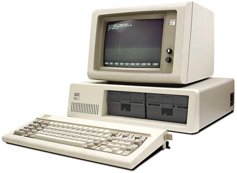
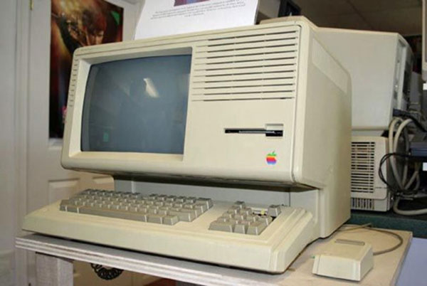

Chương 12

hi IBM ra mắt chiếc máy tính cá nhân của họ vào tháng 8 năm 1981, Jobs đã nói nhân viên của mình đặt mua một chiếc và khảo sát nó. Họ đều nhất trí rằng cái máy dở tệ. Chris Espinosa gọi nó là “một nỗ lực bế tắc và nhàm chán”, và Chris có phần đúng. Nó sử dụng những mã lệnh đã lỗi thời và không hỗ trợ hiển thị đồ họa dạng ảnh nhị phân (bitmapped graphical display). Apple trở nên tự mãn, mà không nhận ra rằng các nhà quản lý công nghệ cảm thấy thoải mái khi mua sản phẩm của một công ty có nền tảng như IBM hơn là từ một công ty được đặt tên theo một loại trái cây. Bill Gates tình cờ đến thăm trụ sở chính của Apple trong một cuộc họp vào ngày ra mắt máy tính cá nhân của IBM. ông kể “Họ dường như không quan tâm. Phải mất một năm để họ nhận ra điều gì đã xảy ra”.

IBM 5150 - chiếc máy tính cá nhân đầu tiên
Thể hiện sự tự tin một cách táo bạo, Apple dành nguyên một trang quảng cáo trên tờ Wall Street Journal với tiêu đề “Chào mừng IBM. Nghiêm túc đấy”. Đây là một cách châm ngòi thông minh của Apple cho một cuộc đối đầu sắp xảy ra trong giới công nghệ, giữa một bên là Apple cục súc và nổi loạn, còn một bên là IBM bền vững (người ta cho rằng cuộc chiến này của Apple không khác gì “châu chấu đá voi”), và nhân tiện sự kiện này cũng giúp loại bỏ những kẻ “ngáng đường” như Commodore, Tandy và Osborne, những công ty vốn được coi ngang tầm với Apple.
Trong suốt sự nghiệp của mình, Jobs hứng thú tự cho mình là một kẻ giác ngộ nổi loạn chống lại thế giới quỷ dữ, một chiến binh Jedi hay một võ sĩ đạo (samurai) của Phật giáo đang chiến đấu chống lại các thế lực hắc ám. Và IBM chính là bàn đạp hoàn hảo nhất để Apple thực hiện được sứ mệnh cao cả như mong đợi. ông định hướng trận chiến sắp tới không chỉ là một cuộc cạnh tranh kinh doanh đơn thuần mà còn là sự tranh đấu về tinh thần, ông đã từng nói trong một buổi phỏng vấn rằng “Nếu vì một vài nguyên nhân nào đó mà chúng tôi mắc phải những sai lầm nghiêm trọng để cho IBM chiến thắng, cá nhân tôi cảm thấy, đó sẽ là lúc chúng ta sẽ chìm vào thời kỳ đen tối (Dark Ages) của nền công nghiệp sản xuất máy tính, và nó có thể sẽ kéo dài khoảng 20 năm.
Một khi IBM đã kiểm soát được một phần thị trường, họ sẽ chặn luôn cả sự đột phá của thị phần đó”. Thậm chí 30 năm sau, khi nhìn lại cuộc tranh giành đó, Jobs đã ví nó như một cuộc thập tự chinh thần thánh: “IBM giống như Microsoft lúc tòi tệ nhất. Họ không phải là động lực thúc đẩy sự đột phá, mà chỉ dẫn độ thế giới công nghệ máy tính đến với quỷ dữ. IBM cũng giống như AT&T, Microsoft hay Google”.
Không may cho Apple, Jobs cũng hướng mục tiêu tới một đối thủ cạnh tranh nữa với Macintosh của ông: công ty sở hữu dòng máy tính Lisa. Một phần, đó là quyết định mang tính cá nhân, ông đã từng bị trục xuất khỏi nhóm phát triển Lisa trước đó, và giờ ông muốn quay lại đánh bại họ. ông cũng nhìn nhận việc cạnh tranh lành mạnh như là một cách để cổ vũ tinh thần chiến đấu cho đội quân của mình. Đó là lý do tại sao ông đặt cược với John Couch 5000 đô la rằng máy Mac sẽ được tung ra thị trường trước Lisa. Nhưng vấn đề ở đây là cuộc cạnh tranh này không hề lành mạnh. Jobs lặp đi lặp lại mô tả nó như một cuộc chiến không cân sức giữa một bên là những “đứa trẻ” cái gì cũng bỡ ngỡ như Apple và một bên là những kỹ sư mẫn cán, dày dặn kinh nghiệm của HP, đã từng phát triển dòng máy tính Lisa từ lâu.
Quan trọng hơn là khi Jobs rời khỏi nhóm phát triển một thiết bị di động cấu hình thấp với giá rẻ của Jef Raskin, ông đã “thai nghén” ra được dòng máy tính để bàn với giao diện đồ họa thân thiện cho người dùng lấy tên là Mac. Đây là phiên bản thu nhỏ của Lisa để tạo giá bán cạnh tranh trên thị trường.
Larry Tesler, quản lý phần mềm ứng dụng cho máy tính Lisa, nhận ra rằng việc thiết kế để cả hai loại máy cùng sử dụng được những chương trình phần mềm như nhau là rất quan trọng. Vì vậy để dung hòa lợi ích giữa hai bên, ông đã sắp xếp để Smith và Hertzfeld đến khu nghiên cứu phát triển của Lisa và trình diễn demo về Mac cho nhân viên ở đây. Hai mươi lăm kỹ sư của Lisa đã tham gia và chăm chú lắng nghe. Được một nửa bài trình diễn thì đột nhiên cánh cửa phòng bật tung. Rich Page, một kỹ sư bốc đồng, người chịu trách nhiệm chính trong thiết kế dòng máy Lisa bước vào và quát lớn “Mactonish sẽ hủy hoại dòng máy Lisa. Mactonish cũng sẽ hủy hoại cả Apple!”
Không ai trong Smith và Hertzfeld lên tiếng đáp trả, vì vậy Page lại tiếp tục lớn tiếng và nhìn như sắp khóc “Jobs muốn phá hủy Lisa bởi vì chúng ta đã không để ông ấy thao túng nó. Sẽ không có ai mua Lisa bởi vì họ biết rằng Mac sắp xuất xưởng”. Rich đùng đùng bỏ đi và đóng mạnh cửa phòng. Nhưng một lát sau, ông quay trở lại và nói ngắn gọn “Tôi biết, đó không phải là lỗi của các anh, Smith và Hertzfeld ạ. Chính Steve Jobs mới là mấu chốt của vấn đề. Nói với Steve là ông ta đang hủy hoại Apple!”.
Jobs thực sự đã khiến cho Macintosh trở thành đối thủ cạnh tranh trong dòng máy tính giá rẻ của Lisa, dòng máy với phần mềm không tương thích. Mọi thứ còn trở nên tồi tệ hơn khi không có chiếc máy nào tương thích với Apple II. Không một ai phụ trách tổng thể ở Apple, vì vậy, không có cách nào để ghìm Jobs lại.
Kiểm soát toàn bộ
Jobs phản đối việc thiết kế Mac tương thích với kiến trúc của dòng máy Lisa không phải do lo sợ cạnh tranh hay muốn trả thù. Quan trọng hơn, đó là một phần quan điểm triết học trong thiên hướng kiểm soát của ông. Ông tin rằng, để tạo ra một chiếc máy tính thật sự tuyệt vời, phần cứng và phần mềm phải được kết nối chặt chẽ với nhau. Khi một chiếc máy tính sử dụng một phần mềm mà cũng đang được chạy trên những chiếc máy tính khác, nó sẽ phải hi sinh một vài tính năng đặc biệt. Với ông, những sản phẩm tốt nhất phải là một tổng thể hoàn chỉnh, được thiết kế thông suốt với phần mềm được thiết kế riêng để tương thích với phần cứng và ngược lại. Macintosh dùng hệ điều hành được thiết kế để chỉ vận hành riêng cho máy. Đây chính là điểm phân biệt giữa Macintosh và hệ điều hành có khả năng cài đặt trên các dòng máy tính khác nhau của Microsoft.
Dan Farber, một biên tập viên của tờ ZDNet đã từng nhận xét “Jobs là một nghệ sĩ ưu tú và có cá tính, ông không muốn những sản phẩm nghệ thuật sáng tạo của mình không may bị làm biến sắc bởi những lập trình viên kém cỏi. Nó cũng giống như việc một ai đó tùy tiện thêm một vài nét vẽ trên bức họa của Picasso hay thay đổi lời bản nhạc của Dylan.” Chính cách tiếp cận mang tính tổng thể, trau chuốt và “không đụng hàng” đã giúp Jobs tạo nên sự vượt trội cho các dòng sản phẩm iPhone, iPod và iPad sau này. Nó đã giúp ông tạo ra những sản phẩm tuyệt vời, nhưng đó không phải lúc nào cũng là chiến lược chiếm lĩnh thị trường tốt nhất. Leander Kahney, tác giả của tạp chí Văn hóa Mac (The Cult of Mac) đã ghi nhận rằng: “Từ chiếc máy tính Mac đầu tiên cho đến mẫu iPhone mới nhất, hệ thống của Jobs luôn được niêm phong để ngăn chặn người dùng can thiệp và chỉnh sửa chúng”.
Chính mong muốn kiểm soát những trải nghiệm của người dùng cũng từng là chủ đề chính trong những cuộc tranh cãi giữa ông và Wozniak về việc liệu Apple II có nên có những khe cắm, cho phép người dùng cắm thêm các thiết bị mở rộng vào bảng mạch chủ của máy tính để từ đó có thể bổ sung một số tính năng mong muốn. Wozniak đã thắng thế: Apple II có 8 khe cắm. Nhưng lần này, đây là sản phẩm của Jobs, chứ không phải là của Wozniak; vì vậy, dòng máy Macintosh sẽ hạn chế số khe cắm. Bạn thậm chí không thể mở vỏ máy để tiếp cận bảng mạch chủ. Như vậy, dù là người đam mê công nghệ hay là tin tặc (hacker), thì điều đó cũng chẳng thú vị chút nào. Nhưng với Jobs, dòng máy Macintosh là dòng máy cho số đông và ông muốn đưa cho họ những trải nghiệm được kiểm soát.
Berry Cash, người được Jobs tuyển dụng vào vị trí chuyên gia hoạch định chiến lược thị trường ở Texaco Towers năm 1982 cho rằng “Nó phản ánh đúng tính cách muốn kiểm soát tất cả của Jobs. Steve đã nói về Apple II và phàn nàn, „Chúng tôi đã không thiết lập quyền kiểm soát hành vi người dùng với chiếc máy này, và hãy nhìn những thứ điên khùng họ đang cố gắng nhồi nhét vào nó. Đó là một sai lầm mà không bao giờ tôi mắc lại nữa”, ông ấy đã đi xa hơn bằng việc thiết kế các công cụ đặc biệt để vỏ của chiếc Macintosh không thể mở được bằng một chiếc tuốc nơ vít thông thường, ông nói với Cash: “Chúng tôi sẽ thiết kế để làm sao không ai ngoài nhân viên của Apple có thể tiếp cận vào phần bên trong của vỏ máy”.
Jobs cũng quyết định bỏ các phím mũi tên di chuyển trên bàn phím của Macintosh. Cách duy nhất để di chuyển con trỏ là dùng chuột. Đó là một cách để bắt buộc những người dùng hoài cổ chấp nhận phương thức nhập lệnh theo cách “trỏ và nhấp” ngay cả khi họ không muốn. Không giống như các nhà phát triển sản phẩm khác, Jobs không tin rằng khách hàng luôn đúng và không phải cái gì cũng chạy theo sự mong muốn dựa trên hành vi thực tại của họ. Nếu họ muốn chống lại việc dùng chuột thì họ đã sai.
Hơn nữa, cũng có một lợi thế khác khi xóa bỏ các phím mũi tên di chuyển con trỏ trên bàn phím. Nó buộc những lập trình viên phần mềm phải viết những chương trình riêng cho hệ điều hành của Mac, chứ không chỉ đơn thuần viết một phần mềm chung có thể chuyển đổi sang sử dụng ở hầu hết các máy tính chạy trên những hệ điều hành khác nhau. Điều này tạo nên một loại liên kết chặt chẽ theo chiều dọc giữa các phần mềm ứng dụng, hệ điều hành và các thiết bị phần cứng như Jobs mong muốn.
Chính mong muốn kiểm soát một cách tổng thể đã khiến cho Jobs dị ứng với những đề xuất rằng Apple nên nhượng quyền công nghệ (license) của hệ điều hành Macintosh cho nhà sản xuất thiết bị văn phòng khác và cho phép họ nhân bản chúng. Mike Muray, vị giám đốc Marketing mới và nhiệt huyết của Macintosh đã đề xuất một chương trình nhượng quyền công nghệ trong một bản ghi nhớ tối mật gửi tới Jobs vào tháng 5 năm 1982. Trong đó, ông viết “Chúng tôi muốn biến môi trường người dùng trên Macintosh trở thành một chuẩn mực của ngành công nghiệp. Nhưng vướng mắt lớn nhất lúc này là người dùng phải mua các thiết bị phần cứng của Mac để có thể trải nghiệm được môi trường người dùng đó. Hiếm khi (nếu đã từng có) một công ty có thể sáng tạo và duy trì một chuẩn công nghệ mang tầm cỡ ngành khi không hợp tác với các nhà sản xuất khác”.
Bản đề xuất của Mike tóm lại là sẽ nhượng quyền công nghệ của hệ điều hành Macintosh cho Tandy, ông lập luận rằng, Hệ thống cửa hàng Radio Shack của Tandy theo đuổi một đối tượng khách hàng khác nên sẽ không bòn rút doanh số của Apple nhiều. Nhưng Jobs đã bác bỏ kế hoạch đó như một phản xạ đã ăn sâu trong tiềm thức. Định hướng của ông là Macintosh vẫn duy trì môi trường kiểm soát hành vi người dùng tuân theo chuẩn ông đặt ra nhưng đồng thời, như Murray đã chỉ ra là sẽ chấp nhận gặp khó khăn trong việc giữ vững vị trí như một chuẩn công nghệ của ngành trong thế giới tràn ngập những bản sao công nghệ như IBM.
Những chiếc máy xuất sắc của năm
Khi năm 1982 sắp kết thúc, Jobs tin rằng ông sẽ được tạp chí Time bình chọn là “Quý ông của năm”. Một hôm, ông đến văn phòng làm việc ở Texaco Tower cùng với Michael Moritz, người phụ trách tạp chí Time ở khu vực San Francisco, ông động viên các đồng sự của mình tham gia các buổi phỏng vấn của Moritz. Nhưng cuối cùng, lên hình trang bìa tạp chí không phải là Jobs. Họ đã thay đổi chủ đề cuối năm là về “Máy vi tính” và gọi nó là chương trình “Chiếc máy của năm”.
Đi kèm với câu chuyện chính của bài báo là những thông tin cá nhân của Jobs do Jay Cocks, một biên tập viên phụ trách chuyên mục nhạc Rock của tạp chí viết, dựa trên những ghi chép của Moritz. Bài báo nhận định “Với đà tăng trưởng kinh doanh một cách trơn tru cùng niềm tin mù quáng, điều thậm chí một kẻ tử vì đạo của Cơ đốc giáo cũng phải ghen tị; chính Steve Jobs chứ không phải ai khác, đã lật tung cánh cửa đón chào kỷ nguyên của máy tính cá nhân”. Bài báo giàu tính thông tin nhưng có đôi phần khó nghe đến nỗi Moritz (sau khi ông viết một cuốn sách về Apple và tiếp tục trở thành đối tác của một công ty liên doanh giữa quỹ đầu tư Sequoia và Don Valentine) đã bác bỏ một số nhận định trong bài báo vì cho rằng những ghi chép của ông đã “được dẫn lại không đúng, bị cắt xén và „nhiễm độc‟ bởi chất phiếm luận đặc trưng của một biên tập viên đến từ New York, người vốn chỉ quanh quẩn trong thế giới của âm nhạc Rock-and- RoN”. Bài báo đã trích dẫn lại câu của Bud Tribble về chiến thuật “bóp méo thực tế” của Jobs và lưu ý rằng ông “cũng đôi khi bật khóc tại những buổi họp”. Có lẽ câu trích dẫn chính xác nhất phải là từ Jef Raskin. Ông đã tuyên bố Jobs “có lẽ sẽ trở thành vị vua tài giỏi nhất của Pháp”.
Jobs đã hoảng hồn khi nghe tin tạp chí này (Time) công bố sự tồn tại của người con gái mà ông đã bỏ rơi, Lisa Brennan, ông biết rằng Kottke là người đã tiết lộ về Lisa cho đám phóng viên, và ông đã xả vào mặt Kottke trước một tá nhân viên khác trong khu làm việc của nhóm phát triển Mac. Kottle kể lại: “Khi phóng viên của tạp chí Time hỏi tôi liệu có phải Jobs có một người con gái tên là Lisa không, tôi đã nói „Đúng thế‟. Những người bạn thật sự không thể để bạn của mình từ chối việc làm cha của một đứa trẻ. Tôi sẽ không để cho người bạn của tôi trở thành một tên khốn bỏ rơi máu mủ của mình. Nhưng ông ấy đã thật sự tức giận và cảm thấy bị xúc phạm, ông ấy nói trước mọi người rằng tôi đã phản bội ông ấy”.
Nhưng điều thật sự làm Jobs cảm thấy “mất mát” là ông ấy không được bình chon là “Quý ông của năm”. Sau này, ông có nói với tôi rằng:
Tạp chí Time đã có ý định chọn tôi là “Quý ông của năm”, và với một người đàn ông 27 tuổi như tôi, tôi thật sự rất coi trọng những thứ như thế. Tôi đã nghĩ điều đó thật tuyệt vời. Họ cử Mike Moritz đến để viết một câu chuyện về tôi và những điều xung quanh tôi. Mike và tôi đồng trang lứa, vậy mà tôi đạt được thành công. Tôi có thể nói rằng Moritz đã ghen tị và có thể vượt quá giới hạn chịu đựng, ông ấy đã tìm mọi cách để phá hủy sự kiện đó bằng một bài viết tồi tệ. Vì thế, đội ngũ biên tập viên của Time ở New York đã nói, “Chúng tôi không thể chọn người đàn ông này là “Quý ông của năm.” Điều đó thực sự làm tôi bị tổn thương. Nhưng nó là một bài học hữu ích, dạy tôi không bao giờ quá phấn khích với những thứ như thế, vì dù gì truyền thông cũng chỉ giống như một rạp xiếc mà thôi. Họ chuyển phát số tạp chí đó cho tôi. Tôi nhớ khi mở gói hàng ra, tôi đã háo hức mong đợi được nhìn thấy khuôn mặt của mình trên trang nhất nhưng, nó lại là hình một mô hình máy vi tính. Tôi nghĩ “Hả, cái quái quỷ gì thế này?” Và sau đó, tôi đọc lại bài báo và nhận ra nó tồi tệ đến mức khiến tôi đã khóc thật sự.
Thực thế, chẳng có căn cứ nào để khẳng định rằng Moritz đã ghen tị và anh ta chủ ý ghi chép không công tâm cũng như việc Jobs từng được đề cử là “Quý ông của năm” chỉ là ý nghĩ của ông. Năm đó, những biên tập viên cấp cao (Tôi sau này cũng trở thành biên tâp viên ở đây) đã quyết định chọn chủ đề về chiếc máy vi tính thay về một nhân vật cụ thể. Họ đã đặt hàng trước đó hàng tháng, một tác phẩm nghệ thuật từ điêu khắc gia nổi tiếng George Segal để sử dụng làm trang bìa tạp chí. Ray Cave sau này cũng trở thành biên tập viên của tạp chí. ông nói “Chúng tôi chưa bao giờ lựa chọn Jobs để lên trang bìa. Bạn không thể nhân cách hóa một chiếc máy vi tính, vì vậy, lần đầu tiên chúng tôi chọn một vật vô tri vô giác để lên hình. Chúng tôi chưa bao giờ có ý định tìm kiếm một gương mặt để lên bìa lúc đó”.
Apple ra mắt máy tính Lisa vào tháng 1 năm 1983, tròn một năm trước khi Mac được trình làng. Và Jobs đã trả 5000 đô la trích từ tiền lương của mình cho Couch. Mặc dù ông không còn là tham gia vào nhóm phát triển Lisa, nhưng Jobs đã đến New York để công bố sự kiện này với tư cách là chủ tịch hội đồng quản trị và cũng là người đại diện về hình ảnh của Apple.

Mẫu máy tính Apple Lisa là một thất bại khi có giá quá đắt
Ông đã được tư vấn viên quan hệ công chúng, Regis McKenna vạch ra kết hoạch chỉ trả lời một số cuộc phỏng vấn với phong thái gây ấn tượng mạnh. Chỉ có một số phóng viên từ cơ quan báo đài được lựa chọn mới được lần lượt dẫn vào phỏng vấn ông trong một căn phòng ở khách sạn Caryle, nơi trưng bày một chiếc máy tính Lisa và rất nhiều lẵng hoa. Kế hoạch truyền thông yêu cầu Jobs chỉ tập trung nói về Lisa và không được đả động chút nào đến Macintosh. Thế nhưng, Jobs không thể kìm chế được chính bản thân mình. Trong hầu hết các bài báo viết về cuộc phỏng vấn Jobs, ở trên tạp chí Time, Tuần san kinh doanh, Tạp chí phố Wall hay tạp chí Fortune, Macintosh đều được đề cập tới. Phóng viên Fortune ghi nhận rằng “Cuối năm nay, Apple sẽ trình làng phiên bản có cấu hình thấp hơn và giá rẻ hơn của dòng máy Lisa có tên là Macintosh. Chính Jobs sẽ điều hành trực tiếp dự án này”. Còn tuần san kinh doanh (Business Week) lại trích lại câu nói của Jobs “Khi ra mắt, Mac sẽ trở thành chiếc máy tính đáng kinh ngạc nhất thế giới tại thời điểm đó”. Ông cũng không quên thừa nhận rằng Mac và Lisa có kiến trúc không tương thích. Việc trình làng dòng máy Lisa như thể cũng kèm với thông báo về “cái chết ngọt ngào” được báo trước của nó.
Dòng máy tính Lisa thật sự đã được khai tử một cách từ từ. Việc sản xuất đã được dừng lại trong vòng hai năm. Jobs nói “Máy tính Lisa quá đắt đỏ. Chúng tôi đã cố gắng bán nó tới các công ty lớn trong khi sở trường của chúng tôi là cung cấp sản phẩm trực tiếp tới người dùng”. Tuy nhiên, việc tung dòng máy Lisa ra thị trường cũng đã giúp Apple chính thức nhận ra rằng họ phải chuyển mục tiêu hi vọng của mình vào dòng máy Macintosh.
Cùng nhau “làm cướp biển”!
Khi đội ngũ phát triển Macintosh lớn mạnh, nhóm đã chuyển từ Texaco Towers đến trụ sở chính của Apple trên phố Bandley Drive và cuối cùng “định cư” chính thức tại Bandley 3 vào giữa năm 1983. Tòa nhà có một sảnh hội trường ở phía trước, được trang bị đầy đủ các trò chơi điện tử theo như ý kiến của Burrell Smith và Andy Hertzfeld, cùng với một dàn âm thanh Toshiba, loa MartinLogan và một trăm chiếc đĩa nhạc. Nơi làm việc của nhóm có thể được nhìn thấy từ sảnh sinh hoạt chung này nhờ việc bao bọc bởi các bức tường kính trong suốt như bể cá; còn bếp thì lúc nào cũng đầy ắp nước hoa quả của Odwalla. Theo thời gian, phòng sinh hoạt chung này được phủ kín thêm bởi những thứ đồ chơi khác, tiêu biểu là cây dương cầm Bosendorfer và chiếc xe mô tô của BMW, những thứ mà theo Jobs sẽ truyền cảm hứng sáng tác lên những tác phẩm nghệ thuật điêu khắc tinh tế.
Jobs đặt ra những khuôn phép chặt chẽ trong quy trình tuyển dụng. Mục tiêu là việc thu nhận đúng người, những con người sáng tạo, thông minh tinh quái và một chút nổi loạn. Nhóm phần mềm sẽ để ứng viên chơi Defender, một trò chơi điện tử yêu thích của Smith. Jobs thì sẽ hỏi những câu hỏi kỳ cục của ông để xem xét ứng cử viên sẽ nghĩ thế nào trong những tình huống bất ngờ. Một lần, Jobs, Hertzfeld và Smith phỏng vấn một ứng cử viên cho vị trí trưởng bộ phận phần mềm. Ngay khi anh ta vừa bước vào phòng phỏng vấn, họ đã nhận ngay ra rằng anh ta quá cứng nhắc và quy ước để có thể quản lý được những “kẻ lập dị” ở trong “bể cá” của ông. Jobs bắt đầu đùa giỡn không thương tiếc với anh ta.
Ông hỏi “Anh quan hệ lần đầu năm bao nhiêu tuổi?”
Vị ứng viên lắp bắp “ông nói gì cơ?”
Jobs nhắc lại “Anh có còn tân không?”.
Anh chàng ứng cử viên ngồi bối rối. Vì vậy, Jobs đổi chủ đề: “Anh đã bao giờ dùng thử chất kích thích (LSD) chưa? Nếu có thì đã dùng bao nhiêu lần rồi?” Hertzfeld nhớ rằng “Cậu chàng tội nghiệp ngượng chín người, sắc đỏ trên mặt cậu ấy biến đổi liên tục, vì vậy tôi cố gắng chuyển chủ đề và hỏi một câu về kỹ thuật”. Nhưng khi anh ta trả lời với giọng đơn điệu, Jobs đã ngắt ngang “Gobble, gobble, gobble, gobble,” (Với ý là bỏ đi, đừng hỏi mất thời gian - ND) khiến Smith và Hertzfeld phá lên cười.
“Tôi nghĩ mình không phù hợp,” chàng trai tội nghiệp đứng dậy ra về.
Ngoài những hành vi khó chịu, Jobs cũng có khả năng truyền dẫn một tinh thần đồng đội thấm nhuần trong tất cả các thành viên của nhóm. Sau khi làm nhân viên cảm thấy “tan nát trái tim,” ông tìm cách vực họ dậy và khiến họ thấy rằng việc trở thành một phần của dự án Macintosh là một mục tiêu vĩ đại. Cứ sáu tháng một lần, ông lại đưa gần như là cả đội đi nghỉ, “đập phá” hai ngày ở một khu nghỉ mát lân cận.
Chuyến nghỉ mát vào tháng 9 năm 1982 là ở Pajaro Dunes gần Monterey. Hơn 50 thành viên của nhóm phát triển Mac ngồi trong lều, quay mặt vào đống lửa đang đốt. Jobs ngồi trên một chiếc bàn trước mặt họ. Ông nói nhỏ nhẹ rồi đi đến một chiếc bảng đứng (flip chart), trình bày những ý tưởng của mình.
Đầu tiên là “Đừng thỏa hiệp”. Đó là một mệnh lệnh mà, theo thời gian, vừa có lợi vừa có hại. Hầu hết các đội ngũ công nghệ đều phải đánh đổi.
Nói cách khác, chiếc máy tính Mac ra đời có thể là một chiếc máy “tuyệt vời đến kinh ngạc” như Jobs và đồng sự của ông có thể làm được, nhưng nó sẽ không thể tung ra thị trường trong vòng 16 tháng nữa, tức là chậm hơn so với kế hoạch. Sau khi đề cập tới ngày hoàn thiện theo kế hoạch, ông nói với mọi người “Chúng ta thà hoãn lại ngày ra mắt sản phẩm còn hơn là tung ra thị trường một thứ sản phẩm đi ngược lại với tôn chỉ chúng ta đề ra cho dòng máy Mac”. Có rất nhiều phong cách quản lý mà lãnh đạo sẽ sẵn sàng đánh đổi, cố gắng chốt ngày tung ra sản phẩm và không được xê dịch. Nhưng Jobs thì không thế. ông khẳng định tư tưởng của mình trong một câu nói bất hủ: “Một sản phẩm sẽ không được coi là hoàn thiện cho đến khi nó được chính thức ra mắt”.
Ông cũng vẽ một biểu đồ khác trong đó có câu châm ngôn mà sau này ông nói với tôi là câu ông thích nhất “Bất cứ cuộc hành trình nào cũng có những phần thưởng xứng đáng” (The journey is the reward), ông thích nhấn mạnh rằng, đội ngũ phát triển Mac là một nhóm người đặc biệt hoạt động với mục tiêu cao thượng. Một ngày nào đó, họ sẽ nhìn lại cuộc hành trình đã đi cùng nhau, quên đi hay cười khẩy những giây phút khó khăn để ròi coi nó như một đỉnh cao diệu kỳ của đời người.
Cuối buổi thuyết trình, một vài người đã hỏi ông rằng ông nghĩ thế nào về việc họ sẽ làm một vài chương trình điều tra thị trường để xem khách hàng muốn gì ở sản phẩm công nghệ, ông đáp lại rõ ràng, dứt khoát “Không! Bởi vì khách hàng sẽ không biết họ muốn gì cho đến khi chúng ta chỉ cho họ”. Sau đó, ông lấy ra một thiết bị có kích cỡ chỉ tầm một quyển nhật ký để bàn và hỏi “Các bạn có muốn nhìn một thứ nhỏ gọn như thế này không?” Và khi ông lật mở, hóa ra là một mô hình chiếc máy tính có thể đặt vừa lên lòng bạn, với bàn phím và màn hình được khớp với nhau qua một thanh nối giống như một cuốn sổ vậy. ông nói “Đây là ước mơ mà tôi dự định chúng ta sẽ cùng nhau chế tạo nó vào nửa cuối những năm 80”. Thật sự, họ đã và đang xây dựng một công ty có thể sáng tạo cả tương lai.
Hai ngày tiếp theo là chương trình thuyết trình của rất nhiều trưởng nhóm khác cũng như của chuyên viên phân tích về tầm ảnh hưởng của nền công nghiệp sản xuất máy vi tính, Ben Rosen. Ngoài ra, cả đội cũng có rất nhiều thời gian rảnh vào buổi tối để thưởng thức những bữa tiệc ở bể bơi và nhảy nhót. Cuối đợt nghỉ, Jobs đứng trước toàn thể nhân viên cũng như khách mời và nói gần như độc thoại “Mỗi ngày trôi qua là một ngày ghi nhận công việc mà năm mươi người trong số các bạn ở đây đã làm được. Nó giống như các bạn đang gửi đi những tín hiệu sóng khổng lồ xuyên qua vũ trụ. Tôi biết các bạn có thể cảm thấy rất khó để có thể làm việc được với tôi, nhưng đó là điều thú vị nhất mà tôi đã làm trong cuộc đời mình”. Nhiều năm sau, hầu hết những “vị thính giả” lúc đó có thể cười với tình tiết “cảm thấy một chút khó khăn để làm việc cùng” của Jobs và đồng ý với ông rằng việc sáng tạo ra “những tín hiệu sóng khổng lò” là trò chơi thú vị nhất trong cuộc đời của họ.
Chuyến đi nghỉ tiếp theo của nhóm là vào cuối tháng 1 năm 1983, cùng với thời gian ra mắt dòng máy tính Lisa và đã có sự thay đổi trong thông điệp. Bốn tháng trước đó, Jobs đã viết lên bảng (Flip chart) rằng “Đừng bao giờ thỏa hiệp”. Còn lần này, lại là một trong những câu châm ngôn của ông: “Những nghệ sỹ đích thực đã xuất hiện” (Real artists ship). Atkinson đã bị bỏ ngoài những cuộc phỏng vấn báo chí khi ra mắt dòng máy tính Lisa. Ông đi thẳng tới vào phòng của Jobs ở khách sạn và dọa rằng sẽ nghỉ việc. Jobs cố gắng xoa dịu nhưng Atkinson khước từ. Jobs trở nên bực mình. “Tôi không có thời gian để giải quyết chuyện này bây giờ, tôi có 60 người khác ngoài kia, những người đang dành tất cả tình cảm với Macintosh và họ đang chờ tôi để bắt đầu buổi họp.” ông bỏ mặc Atkinson để đi gặp những người trung thành với mình.
Với giọng nói đầy phấn chấn, Jobs tuyên bố rằng ông đã giải quyết xong những tranh chấp với phòng thí nghiệm âm thanh của McIntosh để sử dụng tên Macintosh. (Thực tế vấn đề này lúc đó vẫn đang được đàm phán, nhưng thời điểm đó có thể nói là lại nằm trong chiến thuật “bóp méo thực tế” của Jobs). Ông lấy ra một chai nước khoáng và “rửa tội” một cách tượng trưng sản phẩm demo trên sân khấu. Dưới hội trường, Atkinson nghe thấy tiếng cổ vũ reo hò kèm theo một tiếng thở dài. Bữa tiệc tiếp đó là một chuỗi các hoạt động: tắm khỏa thân ở hò bơi, đốt lửa trại trên bãi biển và chìm đắm trong tiếng nhạc to gần như hết cỡ suốt đêm. Chính sự kiện này đã khiến cho khách sạn La Playa ở Carmel, đã từ chối cho họ thuê nếu có lần sau.
Một câu châm ngôn khác của Jobs được nhắc đến trong các kỳ nghỉ ăn chơi là “Thà làm những tên cướp biển tự do còn hơn là trói mình trong quân ngũ” (It‟s better to be a pirate than to join the navy), ông muốn truyền cho đội ngũ của ông thấm nhuần một tinh thần nổi loạn, biến họ cư xử đôi lúc giống như những tên côn đò, tự hào vì những gì họ làm nhưng cũng không ngại ngần việc tịch thu thành quả từ một số người khác. Như Susan Kare đã từng nói “ông ấy muốn nói là „Hãy tạo ra một cảm giác sống vượt qua những quy định gò bó của xã hội và hãy nổi loạn như bạn thích. Chúng ta có thể tiến nhanh. Chúng ta có thể hoàn thành mọi việc‟”. Để kỷ niệm sinh nhật lần thứ 28 của Jobs, rơi vào khoảng vài tuần sau đó, nhóm của ông đã trả tiền thuê một chiếc bảng hiệu bên đường dẫn tới trụ sở của Apple với dòng chữ “Chúc mừng sinh nhật lần thứ 28 của Steve. Bất cứ cuộc hành trình nào cũng sẽ có những phần thưởng xứng đáng - Ký tên những tên cướp biển”.
Một trong những lập trình viên của nhóm phát triển Mac, Steve Capps, quyết định củng cố tinh thần mới xác lập đó bằng cách treo lên một một lá cờ đen hình đầu lâu xương sọ đặc trưng của những tên cướp biển thực thụ (gọi là Jolly Roger). Anh ta cắt một miếng vải màu đen và nhờ Kare vẽ hình đầu lâu có hai chiếc xương chéo lên đó. Trong hốc mắt của chiếc đầu lâu, Kare để hình logo của Apple. Một buổi tối muộn một ngày chủ nhật, Capps đã trèo lên nóc của tòa nhà mới xây dựng, Bandley 3 và treo lá cờ trên đỉnh một chiếc giàn giáo mà những người công nhân xây dựng để lại. Chiếc cờ bay phấp phới một cách đầy ngạo nghễ trong một vài tuần cho đến khi thành viên của nhóm phát triển Lisa đã đột nhập và lấy cắp nó cùng với việc để lại một giấy đòi tiền chuộc.
Capps chỉ huy một cuộc đột kích khác để lấy lại “linh vật” đã bị đánh cắp và đã giật mạnh nó từ tay một thư ký - người đang trông giữ nó cho nhóm Lisa. Một vài người trưởng thành theo sát Apple đã lo lắng rằng tinh thần cướp biển mà Jobs tạo ra đang trở nên ngoài tầm kiểm soát. Arthur Rock nhận xét “Việc treo cờ là một điều hết sức ngớ ngẩn. Nó như thể tuyên bố với những người khác của công ty rằng họ là những kẻ xấu xa”. Nhưng Jobs lại thích điều đó và ông đảm bảo rằng lá cờ sẽ tung bay ngạo nghễ cho đến khi họ hoàn thành dự án Mac. Ông nói rằng “Chúng tôi là những kẻ nổi loạn và tôi muốn tất cả mọi người biết điều đó”.
Những thành viên kỳ cựu của nhóm phát triển Mac đã nhận ra một điều rằng họ có thể đương đầu với Jobs. Nếu họ biết chính xác và hiểu rõ về những điều họ nói, ông có thể chấp nhận sự phản kháng đó, thậm chí là ngưỡng mộ chúng. Tính đến năm 1983, những người mà đã quen thuộc với nghệ thuật “bóp méo sự thật” của Jobs đã khám phá ra một điều khác. Đó là: Khi cần thiết, họ có thể lặng lẽ chống lại những chỉ thị của Jobs. Nếu nó đi theo chiều hướng đúng, Jobs sẽ đánh giá cao thái độ nổi loạn ấy của họ và sẵn sàng lơ đi mọi quyền lực. Sau tất cả, đó chính xác là những gì ông ấy đã làm.
Ví dụ quan trọng nhất giúp chúng ta thấy rõ điều này ở Jobs là sự việc có liên quan đến việc chọn lựa ổ đĩa cho Macintosh. Apple đã có một bộ phận doanh nghiệp tạo ra các thiết bị lưu trữ cực lớn đã chế tạo ra một hệ thống ổ đĩa có thể đọc và chép lên những đĩa mềm 5 %- inch, mỏng và tinh tế tên là Twiggy. Tuy nhiên, trước thời gian Lisa dược hoàn thiện để trình làng vào mùa xuân năm 1983, một sự thật đã được làm sáng tỏ là Twiggy có rất nhiều lỗi. Bỏi vì Lisa có ổ đĩa cứng nên đó không phải là một thảm họa gì lớn lắm, nhưng Mac thì thật sự lâm vào một rắc rối lớn vì không có ổ đĩa cứng. Hertzfeld nhớ lại “Cả nhóm phát triển Mac bọn tôi ai cũng run sợ. Chúng tôi chỉ sử dụng duy nhất một ổ đĩa Twiggy và chúng tôi không hề có ổ đĩa cứng để sử dụng trong trường hợp khẩn cấp”.
Cả đội đã thảo luận vấn đề đó trong một kỳ nghỉ vào tháng 1 năm 1983, và Debi Coleman đã đưa cho Jobs những dữ liệu thống kê tỉ lệ thất bại của Twiggy. Một vài ngày sau, ông lái xe đến nhà máy của Apple ở San Jose để xem xét việc sản xuất những ổ đĩa Twiggy này. Hơn một nửa số ổ đĩa sản xuất ra không đạt tiêu chuẩn. Jobs giận dữ như muốn nổ tung. Với khuôn mặt gần như biến sắc, ông bắt đầu quát mắng và đe dọa đuổi việc hết tất cả những công nhân làm việc ở đây.
Bob Belleville, trưởng nhóm kỹ sư của Mac đã từ tốn dẫn Jobs ra ngoài bãi để xe, nơi họ có thể đi dạo và bàn bạc về phương án thay thế.
Belleville đã tìm ra cách là thay thế Twiggy bằng ổ đĩa loại 372- inch của Sony, ổ đĩa được đặt trong một chiếc vỏ vững chãi bằng plastic và có thể để vừa túi áo sơ mi. Một lựa chọn khác là một phiên bản tương tự ổ đĩa của Sonny nhưng được sản xuất bởi một nhà cung cấp nhỏ hơn của Nhật Bản tên là Alps Electronics Co. Đây cũng là nhà cung cấp ổ đĩa cho Apple II. Alps đã được Sony chuyển nhượng công nghệ sản xuất nên nếu họ có thể sản xuất phiên bản của chính họ kịp thời gian với Mac thì sẽ tiết kiệm được rất nhiều chi phí.
Jobs, Belleville cùng với Rod Holt, một nhân viên kỳ cựu của Apple (người Jobs đã tuyển để thiết kế bộ nguồn đầu tiên cho Apple II), đã bay tới Nhật Bản để xem xét lại quyết định của họ.
Họ di chuyển bằng tàu điện ngầm từ Tokyo đến trụ sở của Alps. Những kỹ sư ở đây làm việc thậm chí không cần một sản phẩm mẫu, chỉ duy nhất một mô hình thô. Jobs nghĩ rằng điều này thật tuyệt, còn Belleville thì lo sợ. ông nghĩ, không có lý do nào tin được rằng Alps có thể đảm bảo cung cấp đủ linh kiện cho việc ra mắt máy tính Mac trong vòng một năm.
Họ tiếp tục đến thăm các công ty khác ở Nhật Bản và Jobs đã có những phép cư xử tòi tệ.
Ông mặt quần bò và đi giày thể thao để gặp gỡ những nhà quản lý người Nhật, trịnh trọng trong những bộ vest đen. Khi họ tặng ông một món quà nhỏ theo như phong tục của người Nhật, ông thường chẳng mấy để ý đến chúng và thậm chí không bao giờ đáp lại thịnh tình của họ bằng những món quà của mình, ông cười một cách khinh khỉnh khi một hàng dài kỹ sư của những nhà máy này xếp hàng để đón tiếp và lịch sự đưa sản phẩm của họ cho ông kiểm tra.
Jobs ghét cả sản phẩm của họ lẫn thái độ khúm núm này. “Các ông đưa tôi những thế này để làm gì?” ông ngừng một lúc rồi nói tiếp “Đây đúng là một thứ tào lao vớ vẩn. Có thể nói cho tôi biết là liệu có ai có thể chế tạo những thứ tốt hơn thế này không?”. Mặc dù, hầu hết những “vị chủ nhà” đều cảm thấy sợ hãi, một số lại dường như thích thú với điều này. Họ đã từng được nghe kể những câu chuyện về phong cách khó chịu và cách cư xử nóng nảy của ông và giờ họ mới được mắt thấy tai nghe.
Điểm dừng chân cuối cùng của họ là nhà máy của Sony, nằm ở một ngoại ô buồn tẻ của Tokyo. Với Jobs, nó trông thật lộn xộn và chẳng có gì chuyên nghiệp cả. Rất nhiều công đoạn được thực hiện bằng tay. ông ghét điều đó. Quay trở lại khách sạn, Belleville đưa ra quan điểm sẽ sử dụng ổ đĩa của Sony vì nó đã có sẵn. Nhưng Jobs thì ngược lại. ông quyết định họ sẽ làm việc với Alps để tự sản xuất ổ đĩa của mình và yêu cầu Belleville chấm dứt mọi công việc liên quan đến Sony.
Belleville đã quyết định tốt nhất là nên phớt lờ một phần nào đó quyết định của Jobs. Ông đề nghị giám đốc điều hành của Sony chuẩn bị ổ đĩa sẵn sàng để họ sử dụng cho Macintosh. Khi Alps không thể giao hàng đúng hẹn, Apple sẽ chuyển sang làm việc với Sony. Vì thế Sony đã cử một kỹ sư, người chế tạo ra ổ đĩa này làm việc với Apple. Vị kỹ sư này tên là Hidetoshi Komoto, tốt nghiệp đại học Purdue, người may mắn sở hữu một bộ óc hài hước khi nói về công việc bí mật của mình.
Bất cứ khi nào Jobs từ văn phòng đến thăm các kỹ sư của nhóm phát triển Mac, hầu hết là vào mỗi buổi chiều, họ sẽ nhanh chóng tìm một chỗ cho Komoto trốn. Một hôm, Jobs đã bắt gặp anh ta ở một quầy thông tin ở Cupertino và nhận ra là đã gặp trong một cuộc họp ở Nhật Bản nhưng ông đã không có ý nghi ngờ gì cả. Cuộc gọi báo động lẩn trốn ngắn nhất là khi Jobs đột ngột ghé thăm nơi làm việc của nhóm phát triển Mac. Lúc đó, Komoto đang ngồi trong khoang làm việc. Một kỹ sư trong đội đã tóm lấy anh ta, chỉ vào tủ đựng đồ và bảo: “Nhanh lên, trốn trong tủ quần áo ấy. Làm ơn đi! Ngay bây giờ!” Hertzfeld kể rằng Komoto lúc đó bối rối nhưng cũng nhảy lên và làm như được chỉ bảo. Komoto trốn trong tủ khoảng năm phút, cho đến khi Jobs rời đi. Các kỹ sư của nhóm phát triển Mac đã phải xin lỗi ông nhưng ông đáp lại “Không vấn đề gì. Nhưng phong cách làm việc của người Mỹ thật lạ. Rất lạ”.
Dự tính của Belleville đã đúng. Vào tháng 5 năm 1983, những người đứng đầu của Alps phải thừa nhận rằng họ cần thêm khoảng 18 tháng nữa để đưa phiên bản ổ đĩa giống như của Sony vào sản xuất. Trong một kỳ nghỉ ở Pajaro Dunes, Markkula tra hỏi Jobs về việc ông định làm sắp tới. Cuối cùng, Belleville đã ngắt lời và nói ông đã chuẩn bị một phương án sẵn sàng thay thế cho ổ đĩa của Alps. Jobs nhìn trân trân một lúc rồi hiểu ra tại sao ông ấy đã gặp người thiết kế ổ đĩa hàng đầu của Sony ở Cupertino. Jobs nói “ông là đồ đểu cáng!”.
Nhưng đó không phải là những phát ngôn trong cơn giận dữ. Jobs nhe răng ra cười.
Hertzfeld kể lại rằng, ngay khi nhận ra những việc mà Belleville và những kỹ sư khác làm sau lưng, “Steve đã nuốt tự ái cá nhân và cảm ơn họ vì đã không tuân theo lệnh của ông và làm những điều được chứng minh là đúng đắn”. Sau tất cả, đó là những gì ông có thể làm được trong trường hợp này.